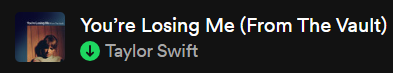

#11 Taylor Swift (Debut) (Score = ???)


Not much to say, havent listened to almost any of it, dont really remember any other songs from it either, no opinion basically (tho I dont love country music)
#10 Fearless (Score = 0.002)


Not even a bad album at all, just don't like it as much as the others, has some solid songs, although the style itself I find gets somewhat uninteresting for me pretty quickly, I'd listen to some of its songs every of its songs just every so often for a certain mood. Also don't think I've listened to all the songs.
#9 Speak Now (Score = 0.002)


Some more good songs, although similar to Fearless I am not very familiar with most of the songs, may have heard them a bit at some point but for both of these I could try listening to all their songs in one run to give them a fairer chance, but still don't think their positions will move that much in the ranking.
#8 Red (Score = 0.003)


This feels almost like a 'superior' second part of Fearless to be honest. Like, for the most part it has many similar themes in similar songs, tho emphazising more in looking back on love, rather than looking forward to it. Also, elephant in the room, All Too Well is a masterpiece, All Too Well may be one of the greatest songs of our modern era, but All Too Well is not an entire album, and while I like Nothing New and the other songs are mostly good, they get notably outshined.
#7 Midnights (Score = 0.004)

- 
-

Yeah... deep down I kinda knew this would happen. It's been a wild ride for Midnights in the rankings, starting out as a Top 2, but mainly due to bias based on how it was the first album I listened to, and by far the one I've listened to the most. I want to make clear tho, although my opinions fluctuate as I listen to more songs (and with time itself), for now I think there is a huge difference between the top 7 and the top 6, I like Midnights noticeably more than Red, even if it doesnt have a song like ATW.
#6 folklore (Score = 0.005)


Text Description Text Description Text Description Text Description Text Description Text Description Text Description Text Description Text Description
#5 The Tortured Poets Department (Score = 0.006)


Text Description Text Description Text Description Text Description Text Description Text Description Text Description Text Description Text Description
#4 lover (Score = 0.007)


Text Description Text Description Text Description Text Description Text Description Text Description Text Description Text Description Text Description
#3 1989 (Score = 0.008)


Text Description Text Description Text Description Text Description Text Description Text Description Text Description Text Description Text Description
#2 evermore (Score = 0.009)


Text Description Text Description Text Description Text Description Text Description Text Description Text Description Text Description Text Description
#1 reputation (Score = 0.010)


Text Description Text Description Text Description Text Description Text Description Text Description Text Description Text Description Text Description